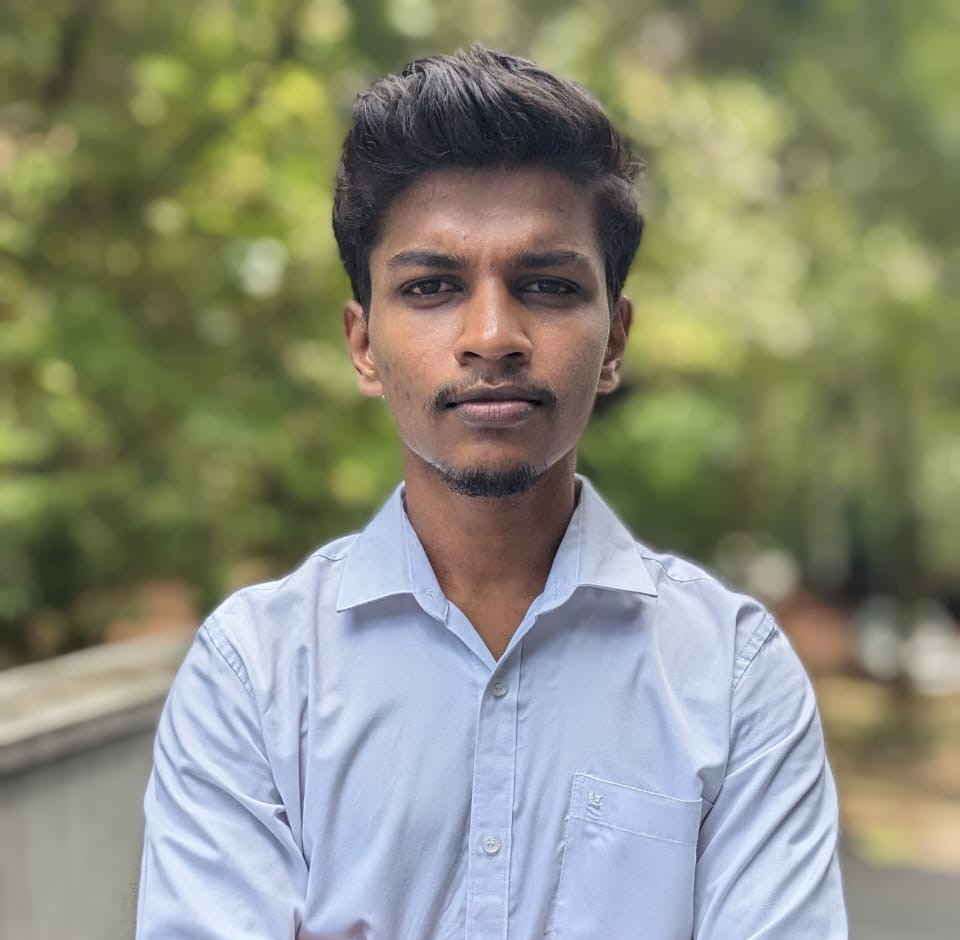

Final-year B.Sc. (Hons) Artificial Intelligence undergraduate at the University of Moratuwa with hands-on industry experience in LLM integrations, agentic AI workflows, and MCP server development. Passionate about Data Science, machine learning research, computer vision, and building production-ready AI systems. Skilled in full-stack and mobile app development, with a proven track record of delivering impactful AI solutions. A published researcher, technical content creator on Medium, and competitive programmer committed to continuous learning and responsible AI innovation.